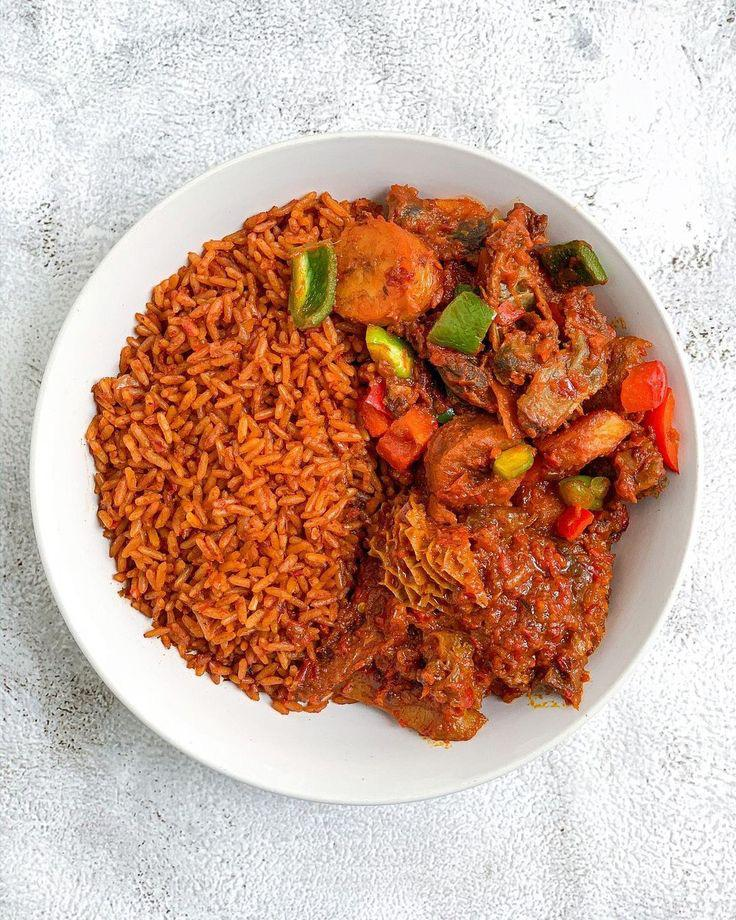

“The smoky jollof tastes like proper party vibes, but delivered to my couch. I order at least twice a week.”

Kandys Treats is all about late-night comfort food with attitude. From smoky jollof to chilled drinks and quick bites, we serve familiar Nigerian flavours with a modern glow.
Serving Lagos and nearby environs. Pickup & delivery available.
Real feedback from real late-night cravings.
Crafted for food lovers, optimized for late nights.
From Jollof to Pounded Yam, every recipe is tuned for flavour, not shortcuts.
Optimized routes and packaging to keep your food hot and crisp.
Open from 9:00AM – 10:30PM so your cravings are always covered.